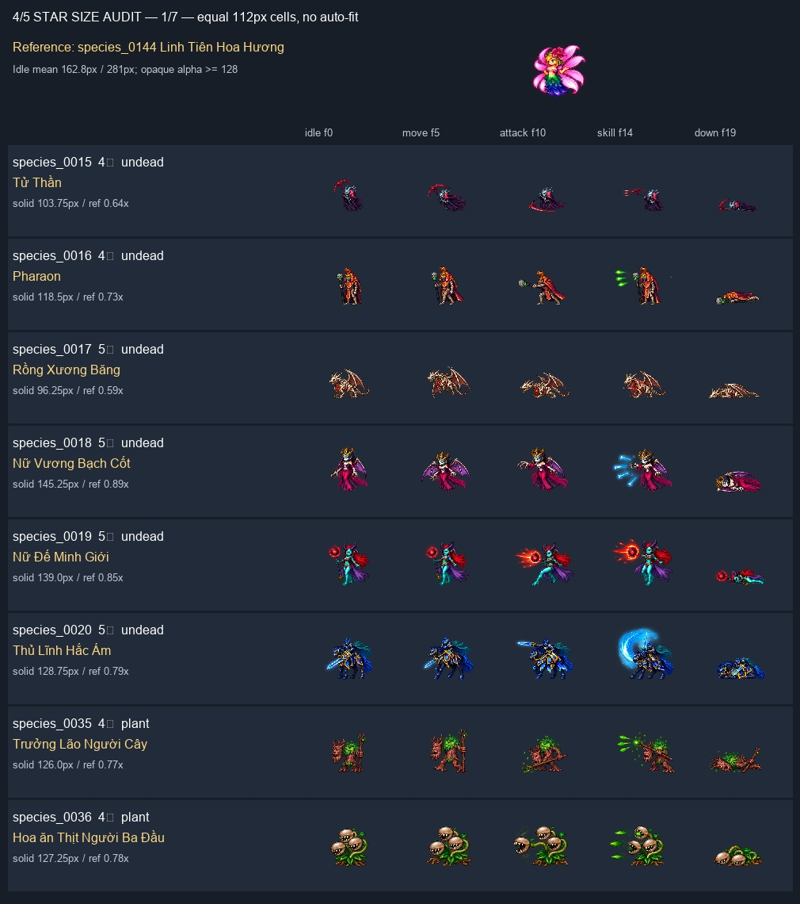
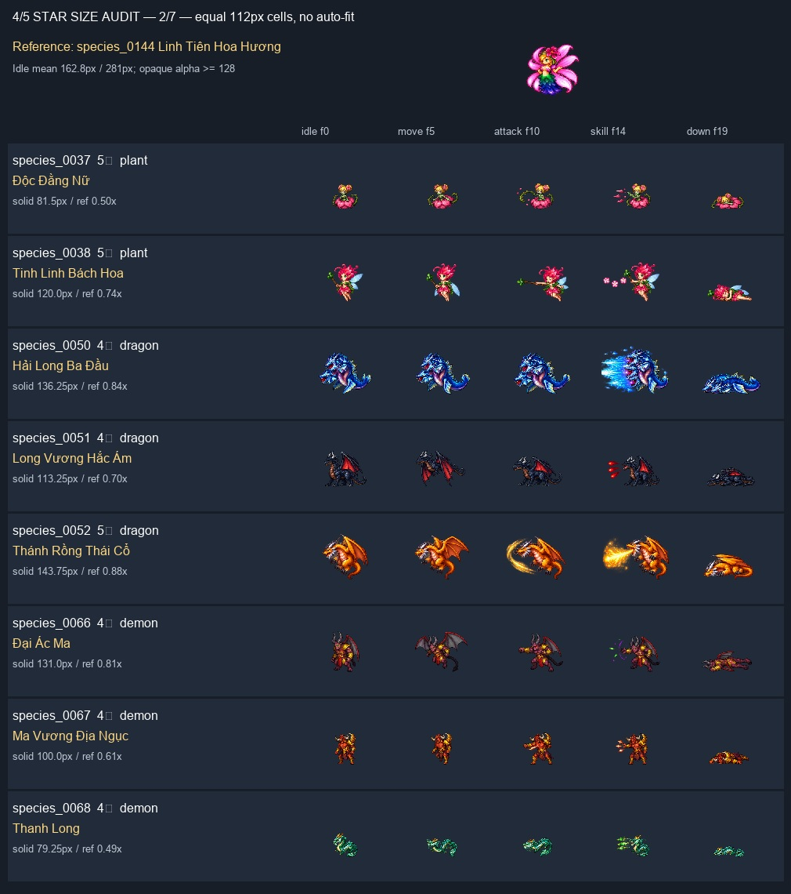
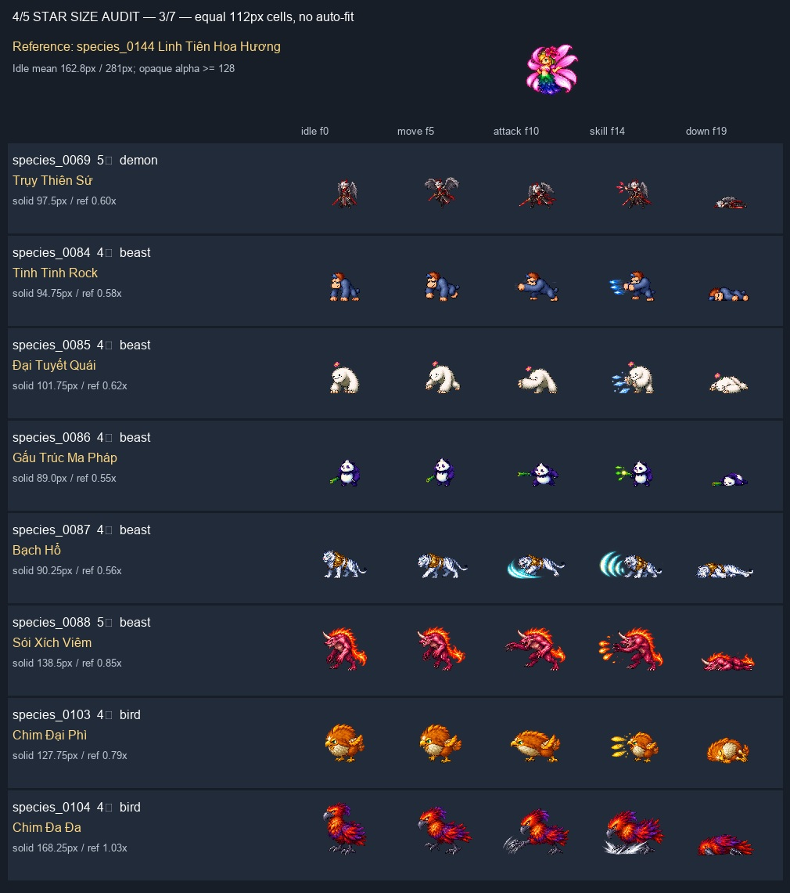
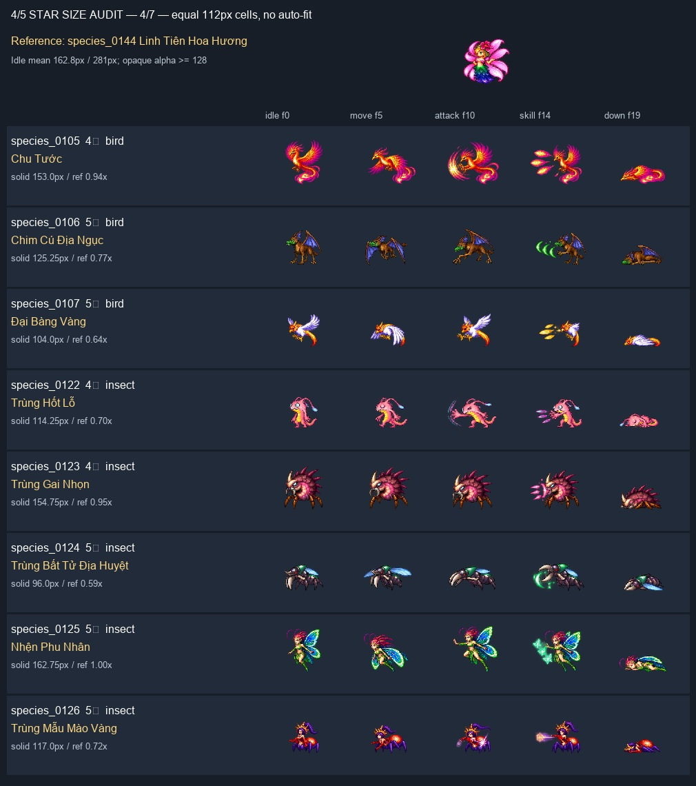
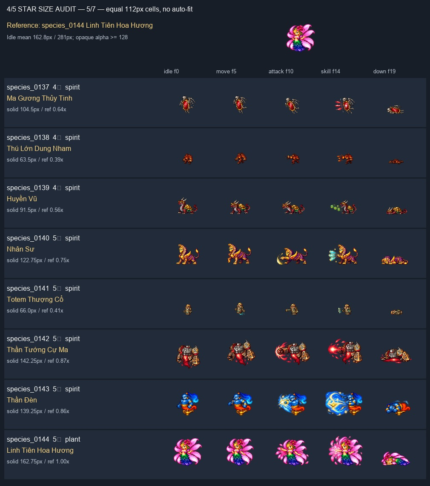
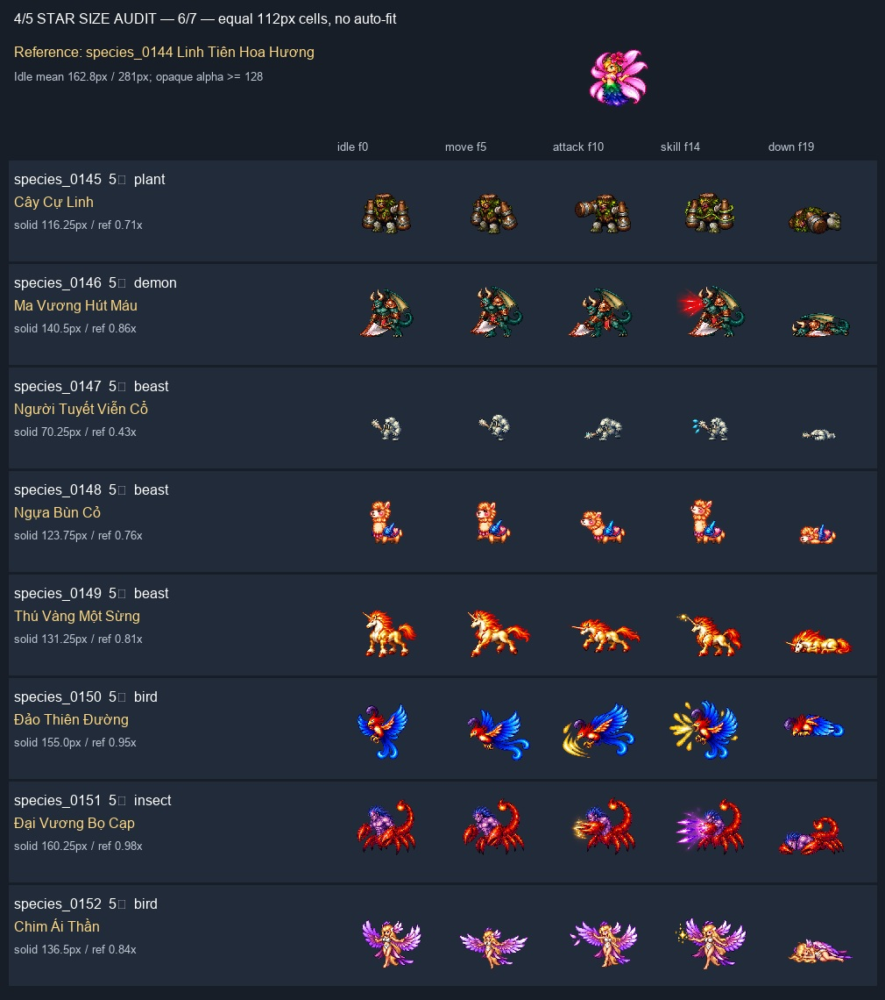
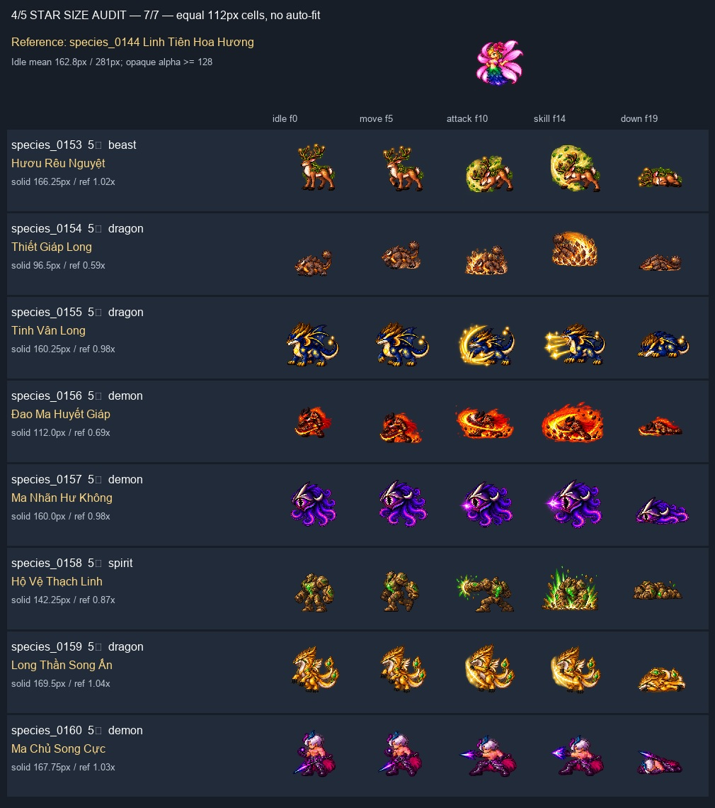

Mở batch đang sửa — candidate mới và tiến độ 56 loài
Chuẩn: Linh Tiên Hoa Hương. So cùng ô 112px, không auto-fit. Đây là review nguồn + renderer, chưa playtest 56 loài trong game. Nguồn rất nhỏ cần trial scale trước khi quyết định redraw.







| ID | Loài | Sao | Idle H | Review |
|---|---|---|---|---|
| species_0015 | Tử Thần | 4 | 103.75 | Dáng người/lưỡi hái nhỏ; tăng hiển thị, kiểm tra mặt và vũ khí ở cỡ đích. |
| species_0016 | Pharaon | 4 | 118.5 | Pharaon thấp hơn chuẩn người; ưu tiên scale, giữ tỷ lệ người thanh mảnh. |
| species_0017 | Rồng Xương Băng | 5 | 96.25 | Rồng xương nhỏ cả chiều cao lẫn bề ngang; cần lớn hơn người về tổng khối. |
| species_0018 | Nữ Vương Bạch Cốt | 5 | 145.25 | Silhouette rõ; tăng nhẹ theo chuẩn người, tránh tính cánh là thân. |
| species_0019 | Nữ Đế Minh Giới | 5 | 139.0 | Silhouette rõ; scale nhẹ, đo thân riêng khỏi quả cầu phép. |
| species_0020 | Thủ Lĩnh Hắc Ám | 5 | 128.75 | Kỵ sĩ/thú cưỡi nên có tổng khối lớn hơn humanoid, không chỉ tăng chiều cao. |
| species_0035 | Trưởng Lão Người Cây | 4 | 126.0 | Người cây cần khối lớn và tay/cành rõ hơn; thử scale trước. |
| species_0036 | Hoa ăn Thịt Người Ba Đầu | 4 | 127.25 | Ba đầu đọc được; scale đều, không bắt cây bò ngang cao bằng humanoid. |
| species_0037 | Độc Đằng Nữ | 5 | 81.5 | Rất nhỏ ở ô chung; chi tiết mặt/thân dễ mất, cần thử tăng cỡ và QA nguồn. |
| species_0038 | Tinh Linh Bách Hoa | 5 | 120.0 | Tiên dáng người nhỏ hơn chuẩn; tăng hiển thị, không dùng cánh/hoa làm thước thân. |
| species_0050 | Hải Long Ba Đầu | 4 | 136.25 | Ba đầu và bề ngang khá rõ; đề xuất khối rồng lớn hơn người. |
| species_0051 | Long Vương Hắc Ám | 4 | 113.25 | Rồng tối tương đối nhỏ và tối; tăng size rồi kiểm tra tương phản trên nền map. |
| species_0052 | Thánh Rồng Thái Cổ | 5 | 143.75 | Nguồn khá rõ; tăng profile rồng, không cần mặc định vẽ lại. |
| species_0066 | Đại Ác Ma | 4 | 131.0 | Ác ma khá rõ; căn lại theo chuẩn người/cơ thể, không theo sải cánh. |
| species_0067 | Ma Vương Địa Ngục | 4 | 100.0 | Người và vũ khí nhỏ, mặt ít pixel; ưu tiên kiểm tra nguồn ở cỡ lớn. |
| species_0068 | Thanh Long | 4 | 79.25 | Thanh Long rất nhỏ; ưu tiên tăng khối rồng và QA lại chi tiết nguồn. |
| species_0069 | Trụy Thiên Sứ | 5 | 97.5 | Humanoid/cánh nhỏ; tăng cỡ để mặt và vũ khí dễ đọc. |
| species_0084 | Tinh Tinh Rock | 4 | 94.75 | Khỉ thấp nhưng khối nhỏ; scale theo thú to, không ép cao như người. |
| species_0085 | Đại Tuyết Quái | 4 | 101.75 | Yeti cần to hơn người về khối; nguồn hiện nhỏ, QA mặt/tay khi tăng. |
| species_0086 | Gấu Trúc Ma Pháp | 4 | 89.0 | Dáng chibi hợp thiết kế nhưng quá nhỏ tại cùng ô; tăng vừa, giữ anatomy. |
| species_0087 | Bạch Hổ | 4 | 90.25 | Thú bốn chân thấp là đúng; căn chiều dài/thân, không ép chiều cao bằng người. |
| species_0088 | Sói Xích Viêm | 5 | 138.5 | Khối thú khá rõ; tăng vừa theo vai/lưng, loại lửa khỏi phép đo thân. |
| species_0103 | Chim Đại Phì | 4 | 127.75 | Dáng tròn đọc rõ; tăng vừa theo khối, giữ thiết kế chim. |
| species_0104 | Chim Đa Đa | 4 | 168.25 | Size nguồn gần chuẩn; không cần phóng đồng loạt chỉ vì 4 sao. |
| species_0105 | Chu Tước | 4 | 153.0 | Silhouette tốt; profile chim lớn, chừa chỗ đuôi/lửa. |
| species_0106 | Chim Cú Địa Ngục | 5 | 125.25 | Cú lớn cần tăng khối; so thân riêng khỏi cánh. |
| species_0107 | Đại Bàng Vàng | 5 | 104.0 | Chim nhỏ khi đứng cạnh chuẩn; tăng size, QA đầu và mỏ. |
| species_0122 | Trùng Hốt Lỗ | 4 | 114.25 | Dáng đứng nhỏ hơn chuẩn; tăng vừa để đọc rõ mặt và tay. |
| species_0123 | Trùng Gai Nhọn | 4 | 154.75 | Nguồn tương đối rõ; ưu tiên scale/context, chừa khoảng cho gai. |
| species_0124 | Trùng Bất Tử Địa Huyệt | 5 | 96.0 | Thấp vì anatomy bò ngang; căn bề ngang/thân, QA chân ở cỡ đích. |
| species_0125 | Nhện Phu Nhân | 5 | 162.75 | Nguồn gần chuẩn, rõ; không cần vẽ lại vì size. |
| species_0126 | Trùng Mẫu Mào Vàng | 5 | 117.0 | Thân humanoid trên bụng côn trùng nhỏ; tăng size để đọc mặt. |
| species_0137 | Ma Gương Thủy Tinh | 4 | 104.5 | Gương/chi nhỏ; tăng vừa, kiểm tra mặt gương trên nền tối. |
| species_0138 | Thú Lớn Dung Nham | 4 | 63.5 | Nhỏ nhất nhóm, 63.5px; ưu tiên thử tăng lớn và QA nguồn, có thể cần redraw nếu thiếu nét. |
| species_0139 | Huyền Vũ | 4 | 91.5 | Dáng bốn chân thấp; tăng khối/chiều dài, không ép cao như humanoid. |
| species_0140 | Nhân Sư | 5 | 122.75 | Nhân Sư nên nặng và rộng hơn người; scale theo thân/sải chân. |
| species_0141 | Totem Thượng Cổ | 5 | 66.0 | 66px, họa tiết quá li ti; nhóm ưu tiên QA nguồn sau tăng size. |
| species_0142 | Thần Tướng Cự Ma | 5 | 142.25 | Khối lớn rõ; profile cự thú, đừng ép cùng cao với pet nhỏ. |
| species_0143 | Thần Đèn | 5 | 139.25 | Djinn khá rõ; tăng nhẹ theo thân + đèn, giữ nối đuôi và mũi đèn. |
| species_0144 | Linh Tiên Hoa Hương | 5 | 162.75 | Chuẩn size humanoid do chủ game chọn; giữ nguyên PNG. |
| species_0145 | Cây Cự Linh | 5 | 116.25 | Cự linh nhỏ so tên/khối dự kiến; tăng hiển thị, giữ nguyên nguồn duyệt. |
| species_0146 | Ma Vương Hút Máu | 5 | 140.5 | Nguồn khá rõ; scale theo thân, không lấy đao/cánh làm chiều cao người. |
| species_0147 | Người Tuyết Viễn Cổ | 5 | 70.25 | 70.25px, cự thú đang thành mini; ưu tiên lớn hơn người và QA mặt/tay. |
| species_0148 | Ngựa Bùn Cỏ | 5 | 123.75 | Thiết kế chibi, không đổi anatomy; tăng vừa, tránh thành pet mini. |
| species_0149 | Thú Vàng Một Sừng | 5 | 131.25 | Bốn chân/sừng rõ; giữ thấp hơn người ở vai nhưng đủ dài và to. |
| species_0150 | Đảo Thiên Đường | 5 | 155.0 | Nguồn rõ; scale theo chim và chừa đuôi, không cần redraw size. |
| species_0151 | Đại Vương Bọ Cạp | 5 | 160.25 | Khối/càng rõ; profile lớn và rộng, giữ art đã duyệt. |
| species_0152 | Chim Ái Thần | 5 | 136.5 | Cánh rộng nhưng người nhỏ hơn bbox; scale theo thân humanoid, chừa cánh. |
| species_0153 | Hươu Rêu Nguyệt | 5 | 166.25 | Nguồn mới đã gần chuẩn ô; cần profile thú bốn chân khi runtime được duyệt. |
| species_0154 | Thiết Giáp Long | 5 | 96.5 | Rồng thấp/bò ngang; tăng khối/chiều dài, không ép đứng cao như humanoid; giữ bản duyệt. |
| species_0155 | Tinh Vân Long | 5 | 160.25 | Nguồn mới rõ và rộng; profile rồng lớn hơn người, chưa kích hoạt runtime. |
| species_0156 | Đao Ma Huyết Giáp | 5 | 112.0 | Thân/đao bị lửa lấn; tăng cỡ và QA readability; giữ bản duyệt. |
| species_0157 | Ma Nhãn Hư Không | 5 | 160.0 | Nguồn mới gần chuẩn; căn lõi/mắt riêng khỏi xúc tu/FX, không cần cố lớn như rồng. |
| species_0158 | Hộ Vệ Thạch Linh | 5 | 142.25 | Khối rõ; profile golem lớn hơn người, giữ bản duyệt. |
| species_0159 | Long Thần Song Ấn | 5 | 169.5 | Nguồn mới gần chuẩn; profile Special rồng lớn, chừa hai cánh và ấn. |
| species_0160 | Ma Chủ Song Cực | 5 | 167.75 | Nguồn mới gần chuẩn người; giữ tỷ lệ shonen, FX không quyết định size thân. |